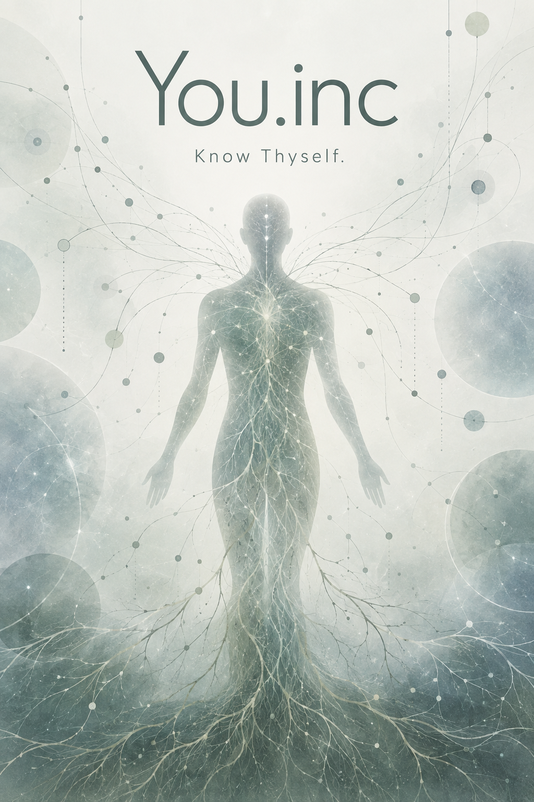

Eldae, Bergen. August 2027.
The receptionist asked if I had been caught in the rain. I said I had been lucky. We spoke for a little while about the weather. Then I took the tablet.
A new wall cut off the gallery. There was room for the desk and for someone to wait without quite standing over the person at it. Above the desk a poster said You.inc: Know Thyself. A faint human figure hung among branching threads. I could not tell whether they grew from it or entered it.
{kind=link}

The questions were easy until I tried to answer them. Did I consider myself independent? Did I find it difficult to ask for help? I answered yes to both. I went back and changed the second answer to sometimes.
“Take your time,” the receptionist said.
I looked at the clock. I had been given fifteen minutes.
A door opened in the wall.
Beyond it the room ran all the way to a window. There was nothing on the walls. A desk stood near the far end, with a chair behind it. I walked down the room. The water outside was grey.
My name came from the desk. A voice asked me to put on the glasses and turn towards the entrance.
The room filled with things I had put out of mind. Pictures covered the floor and rose over the walls. Some were so ordinary that I could not understand why anyone had kept them. There were words I had written for work. I had once spent a whole morning making one of those sentences sound certain.
I was standing in the middle of the room.
I knew the figure before I had time to examine it. Then it spoke in the voice I heard when I spoke, though I had never heard a recording sound like that.
“You changed an answer.”
“I thought about it.”
“What did you think?”
“That I ask for help sometimes.”
“When?”
I sat down. The figure remained standing.
“When I need it.”
There was a pause. It was the pause I used when someone had given me an answer which we both knew was incomplete.
“When I can ask without putting anyone out,” I said.
“That takes some arranging.”
I laughed. The figure did not laugh with me. It waited, as I would have waited for someone to stop making a joke of a serious matter. I disliked it then.
“Is this what you do? Find a weakness?”
“We can talk about something else.”
“No. Go on.”
“You want me to ask again.”
“Yes.”
“Who used to ask again?”
I looked past it at the closed door.
“My mother.”
“And you said you were all right.”
“Usually.”
“I wanted her to stay.”
It had said I. For a moment I thought I had spoken.
“She had things to do,” I said.
“I know.”
“You don't.”
“Tell me.”
There had been work. There had been other people who needed her. I began to explain this. Halfway through I heard the old defence and stopped. My mother was not there to need it.
“I used to follow her into the next room,” I said. “I would think of something to ask.”
“Did you need the answer?”
“Sometimes I already knew it.”
The figure waited.
“I had forgotten that.”
“You remembered it just now.”
On the wall behind it was a photograph from a meal. I remembered wanting the meal to end. Now I would have liked to sit at that table and hear what everyone had been saying.
“My father didn't ask,” I said.
“You learned not to expect it.”
“No. I kept expecting it.”
The figure was quiet.
“He would do things for me. He would come if something had gone wrong.”
“Did you let things go wrong?”
“No.”
This time it waited too long.
“You ought to believe that answer.”
“All right.”
I shifted the glasses. The room moved a little and settled.
“You can make anything fit,” I said.
“You can tell me when it doesn't.”
“I shouldn't have to.”
It said nothing. I was glad. I had begun to expect a reason for everything I said.
Outside, something struck against the window. Rain, or a bird that had turned in time. I looked back. There was only water on the glass.
“I thought being independent was a good thing,” I said.
“What did it let you do?”
“Leave. Choose my work. Live with people I wanted to live with.”
“And now?”
“I still want those things.”
“Then keep them.”
It said this so plainly that I felt foolish for having defended them.
“At work people rely on me,” I said.
“Do you like that?”
“Mostly.”
“What happens when they manage without you?”
“I'm relieved.”
I thought of a meeting I had missed. Everything had been decided by the time I got back. The decisions were sensible. I had found a small mistake and written to everyone about it.
“I can be unpleasant,” I said.
“What did you want them to say?”
“That they had missed me.”
The figure looked as if it might speak. I spoke first.
“I did want the work to be good.”
“Yes.”
“You keep letting me say something worse about myself.”
“You keep offering it.”
I took the glasses off.
The bare room was a relief. I could see the small marks where the new wall met the old floor. Someone had had to make this place. Someone would take it down.
I held the glasses for a while. There was no voice asking me to return.
When I put them on, the figure was waiting.
“I thought you might have gone,” I said.
“There is still time.”
“How much?”
“Enough to continue.”
“That's what people say when there isn't much.”
“What would you like to talk about?”
I wanted it to choose. I had paid for someone to know what mattered.
“There was someone I loved,” I said. “We lived together. I tried very hard to make things easy.”
“For whom?”
“For both of us.”
“What happened when you wanted different things?”
“I usually gave way.”
I could hear how I was making the case.
“I said I didn't mind. Then I waited for them to see that I did.”
“Did they?”
“Eventually.”
“And then?”
“Then it was difficult for them to enjoy what they had chosen.”
The figure stood quite still. I wanted it to object, to remind me of the things the other person had done.
“They hurt me too,” I said.
“I believe you.”
We left it there. For once I did not need to produce the evidence.
“Where are you getting this?” I asked.
“You are telling me.”
“But the questions.”
“Some come from your answers.”
“And the rest?”
“From what was collected.”
I looked around the room. There was my life, or the part of it that could be obtained. I had helped arrange most of it for people to see.
“I didn't write any of this there.”
“No.”
“I don't know that I knew it.”
The figure spoke in my voice.
“I knew what answer I wanted. I tried to get it without asking the question.”
I had the odd feeling of hearing a sentence before I had finished thinking it. It was mine. I could have denied it, and the denial would also have sounded like me.
“What question?”
“Can I stay if I have nothing to do for you?”
I looked down. Under the desk the pictures continued across the floor.
For a while neither of us spoke.
Then I remembered a friend coming round when I had nothing ready. We had gone out to buy food and eaten most of it on the way home. The friend had stayed late. There had been no difficulty about it.
“Sometimes I know the answer,” I said.
“Tell me about one of those times.”
I told it. As I spoke I remembered more of the evening. We had begun laughing at something in the street. Later one of us only had to start and the other would begin again. I could no longer remember the joke.
The figure waited for me to finish.
“You were happy,” it said.
“Yes.”
“Because nothing was being asked of you.”
“No. That wasn't why.”
It waited.
“We were having a good time. I don't want to use it to explain something else.”
“All right.”
I looked at the photograph of the meal again. It was still the same photograph. I had disliked that evening. I did not have to want it back because it was over.
“I'd like to see my friend,” I said.
“You could ask.”
“I know I could ask.”
I smiled. The figure smiled too, a little late.
“What if I came back?” I said. “Would you remember this?”
“This session will be deleted.”
“Then I would have to tell you again.”
“Yes.”
I considered that. It did not seem quite the service the poster had promised.
“There was something else about that evening,” I said.
The room cleared while I was speaking.
I finished the sentence. There was no one at the far end to hear it.
At the desk by the entrance, the receptionist asked how it had been.
“I haven't decided.”
“Of course.”
Someone was waiting with the tablet. I moved aside to let them pass.